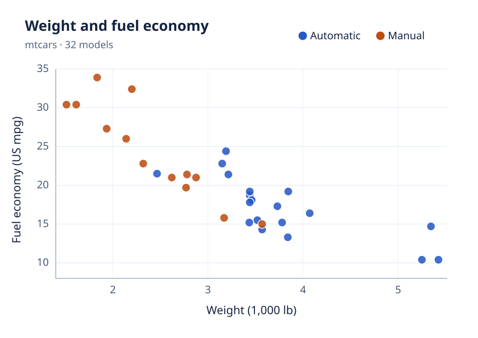

AGENT
用一段话交代任务
配置并验证模型 API Key，交给 Agent 写和运行 R 代码。
看 Agent 示例从零基础到进阶应用，循序渐进地学习 R，随时提问，边学边练。
借助 ggplot2，将数据转化为精美、专业且可自定义的图表。
上传参考图，使用 R 复现图表样式，让复杂的科研绘图不再困难。
无需精通 R，只需描述你的分析需求，剩下的交给 Rcoder。
将分析结果、数据图表与文字解读整合为可编辑的 Word 报告。
从数据洞察到可视化表达，轻松生成可编辑的 PowerPoint 演示文稿。
从需求到交付
用 mtcars 演示从一句需求到图表和汇总表。
用 mtcars 画车重和燃油经济性的散点图，按自动挡和手动挡着色。 导出图表和分组汇总。
R · scripts/mtcars.R
d <- datasets::mtcars
colors <- c("#2458c6", "#be4b10")
plot(mpg ~ wt, data = d, pch = 19, col = colors[d$am + 1L])这是用来说明流程的代码片段，不是完整脚本，也不会在此处运行。
打开 scripts/mtcars.R，检查读入的数据、绘图逻辑和输出路径；需要时直接编辑。
回看 Agent 的运行反馈，打开 PNG 预览，核对坐标、图例和数据来源。

本次案例文件
scripts/mtcars.Routput/mtcars_chart.pngoutput/mtcars_summary.csv在工作区下载需要的文件，或者导出项目 ZIP。下载后可直接打开文件，核对图表和数据。
按你的方式开始
AGENT
配置并验证模型 API Key，交给 Agent 写和运行 R 代码。
看 Agent 示例R CONSOLE
在浏览器里写和运行 R，无需 API Key。
打开工作区QUICK DEMO
免配置，直接看示例代码和结果。
试用演示可以。告诉 Rcoder 你现在会什么、想学什么，它可以按你的程度安排练习。比如用你关心的数据画第一张图，边跑代码边解释；遇到报错，也可以接着问。
可以。导入 CSV，用平常说话的方式交代任务，比如「按月份汇总销售额，画出趋势」。Rcoder Agent 会写 R 代码、运行分析并生成图表，你可以拿原表核对。
用 Agent 跑分析时，图表和统计数值来自实际执行的 R 代码。代码和输出都能打开核对，改完也可以再跑。AI 仍可能读错字段、选错方法或解读有误，重要结论要复核。
支持，也可以配置 OpenAI、Claude、Gemini 等主流模型。使用 Agent 需要配置所选服务；只想手动运行 R，不需要模型 API Key。
可以。把 RStudio 里的 R 脚本和数据文件导入 Rcoder，或从 Rcoder 导出项目 ZIP，解压后用 RStudio 打开其中的 .Rproj 文件。换环境后，部分 R 包可能需要重新安装。
项目文件默认保存在当前浏览器。换浏览器、设备或域名前，先导出 ZIP，并在新环境确认能打开。ZIP 保存的是项目文件，不是整个工作区状态。
Agent 会向你配置的模型服务发送请求，提示词和纳入请求的附件或项目内容也可能随请求发送。处理敏感数据前，请先确认服务政策和数据使用要求。
支持兼容接口，费用和使用限制以服务商为准。